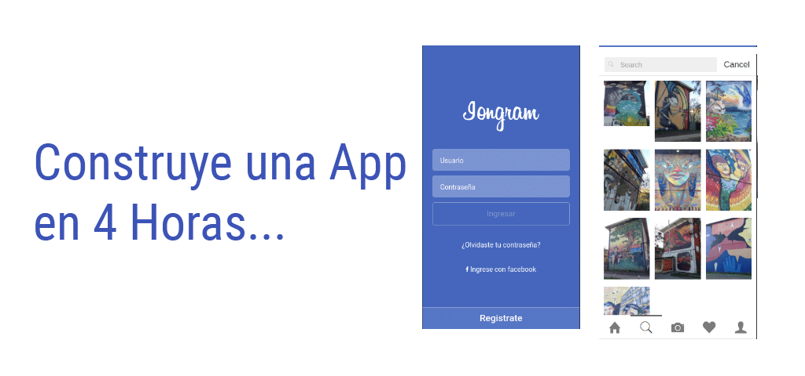

-
¿ Que Aprenderemos ?
Patrocinado: 10%
-
En este workshop aprenderas a realizar paso a paso un app con Ionic.
1 - Aprenderemos a manejar los Tabs de Ionic.
2 - Aprenderemos a utilizar los plugins de Camara.
3 - Aprenderemos a utilizar las herramientas Ionic CLI.
4 - Aprenderemos a empaquetar nuestras Apps para enviar a las tiendas.
5 - Enviaremos a la tienda de Google. - Preguntas: Hi@carlosrojasblog.com
-
¿ Como funciona ?
-
1 - Cada persona realiza un patrocinio por el monto definido por el Organizador
2 - Una vez se llegue a la meta del organizador se realiza el Workshop y se informa el lugar. -
Acerca del Organizador.
-

-
Desarrollador Móvil desde el 2006. Empezo su carrera desarrollando con tecnologias WML/WAP y j2ME. Experiencia como Entrenador en Empresas como Cymetria Group S.A.S y Eforcers S.A. Co-Founder de SponzorMe.
Organizador de Hybrid Apps Chile -
¿ Donde ?
-
1- Cuando se llegue al 30% el evento se realiza de manera virtual.
2- Cuando se llegue al 80% el evento se realiza de manera presencial se anuncia el Lugar y la fecha la cual sera un dia Miercoles o un dia Sabado en el mes de Agosto. -
¿ Que sucede si no se realiza el evento ?
-
En caso de no realizarse el evento el organizador esta en la obligación de realizar la devolución del dinero, es decir, se debe tener en cuenta que el costo de los medios de pagos no es reembolsable (5%).